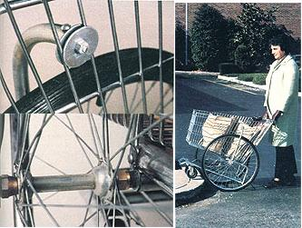

The Bicycle-Wheeled Shopping Cart
Here's a helpmate for the suburban or urban shopper with a load of groceries to carry home.
By the Mother Earth News editors
January/February 1983
While millions of Americans are complaining about the high price of gasoline (and the rising cost of automobile insurance), many others are trying to get along - either all the time or as often as possible - without using a car. And, obviously, marketing day can be a real chore for such folks.
Well, not long ago reader Wendell Gautschi wrote in describing one solution to the problem: simply converted a discarded shopping cart into an easy-to-push carryall! We were so intrigued by the photos of Wendell's contraption that our research crew decided to build one themselves. And it's been quite a hit with the rest of the staff. In fact, the more we look at the thing, the more ideas we get for using it.
If you'd like to duplicate our "shopper," you'll need a retired supermarket cart, of the kind all too frequently seen abandoned in gullies, landfill operations and back alleys. Of course, you shouldn't just "adopt" a deserted derelict (it still belongs to the market), but you'll find that many stores have damaged carts that they're willing to give away to folks who can make good use of them (ours was a gift from a local supermarket). And although a castoff carryall is likely to be in poor shape, it may still be perfectly salvageable. After all, for this project you'll need only the basket, frame and swiveling front wheels.
In addition, you'll have to round up two 26-inch bicycle wheels (check junkyards and bike repair shops for these) and an assortment of pipe, rod and fittings. The exact sizes of these components will vary according to the size and style of the cart you come up with, so you'll need to measure yours to determine the correct dimensions. We can, however, at least give you the specifics of the parts used for Mother's model.
The axle assembly is made up of a 28 1/4-inch length of 3/8-inch threaded rod, an 18-inch length of 1/2-inch electrical metallic tubing (E.M.T.), a piece of scrap wood measuring 3/4-by-1-by-15 1/2-inch, four 3/8-inch copper pipe flare fittings, four 3/8-inch nuts, two 3/8-inch washers, and three stainless steel 2-inch-diameter hose clamps.
The side braces consist of two 19 1/2-inch lengths of 1/2-inch E.M.T. (start with pieces a bit longer and then trim them to fit), four 1/2-inch body washers, two 1/4-by-1-inch eyebolts with nuts, and two 1-inch long 10-32 bolts.
You'll also need a hacksaw and file, an electric drill (with 1/4-inch and 3/8-inch bits), a screwdriver and a tube bender (an electrician or electrical supply shop in your area may let you borrow one for the small bit of bending required here).
To get started, saw off the cart's rear wheels, and stash them away for a future project. Then file the cut edges smooth.
Next, prepare the side braces. Using the tube bender, form a curve in one end of each section of E.M.T. Then, making sure each brace will clear the wheel when it's attached to the hub at one end and the basket at the other, trim the tubing to size. Now, place each piece on a hard surface and - with the curve pointing upward - flatten a 2-inch tip at the bottom (unbent) end. Drill a 3/8-inch hole through the center of the flattened part (where it'll fit over the axle) and a 1/4-inch hole through the curved end (for the bolt that will secure the brace to the side of the cart).
The axle fits under the basket and - on Mother's carryall - 6 inches forward of its rear end. Lay the 18-inch length of E.M.T. under the basket - at the appropriate point on your cart - and against the supporting frame. Then insert the wooden spacer between the tubing and the basket and secure both E.M.T. and spacer to the basket gridwork, using the three hose clamps.
Now, slide the threaded rod through the tubing and center it before fitting a washer and then a nut at either end. Add the remaining pieces in the following order (from the nut out): flare fitting (with its cone toward the wheel hub), bicycle wheel, flare fitting, side brace and nut. Your cart should now stand on four wheels.
The final step is to finish attaching the side braces. Insert the open end of the eyebolt into the "mouth" of the curved end of the brace and fasten it in place with the 10-32 bolt run through the E.M.T. Then swing the brace up to the spot where it's to be attached to the basket; slide two body washers over the stem of the eyebolt, one on each side of the basket grid; and clamp them together with the gridwork between.
As we said, the cart you obtain may well be a bit different from the one Mother used, and you might have to fiddle with the dimensions and procedures given here. The basic idea, however, is simply to put the bicycle wheels in a position that allows you to tilt the cart backwards easily. This will raise the front wheels, allowing you to roll the carrier up over a curb or step, or even push it briskly down the street on two wheels.
We hope our version of this hauler will inspire and enable you to make one. Then, once you've put it together, you can take off to the nearest market for a spree of economical bulk buying and "cart" your supplies back home in your very own gasless pushmobile!
 MOTHER EARTH NEWS STAFF Wendell Gautschi's original design featured four large wheels on a cart that differed slightly from the Mother's. |
 MOTHER EARTH NEWS STAFF Top left: The top of a brace as seen from the inside of the cart. Bottom left: Close-up of the wheel axle, showing the various components in place. Right: Here Mother's version of the shopping cart is shown in action |
|